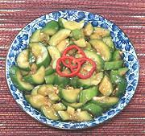

|
Cucumber Salad, SmackedChina - Sichuan - Suan Ni Pai Huang gua | ||||
| Makes: Effort: Sched: DoAhead: |
1 # ** 40 min Yes |
An easy to make salad, dressed quite differently from the norm, and I happen to like it a lot. It does have a chili bite, but you can control that. Because of salting and draining, it won't get wattery if it has to stand for awhile. | |||
|
1 1 ----- 2 1/8 1/2 1 1 2 ----- |
# t --- cl t t T t T --- |
Cucumbers (1) Salt -- Dressing Garlic Sichuan Peppercorns (2) Sugar Soy Sauce Black Rice Vinegar (3) Chili Oil (4) ---------- |
Make - (35 min - 10 min work)
|